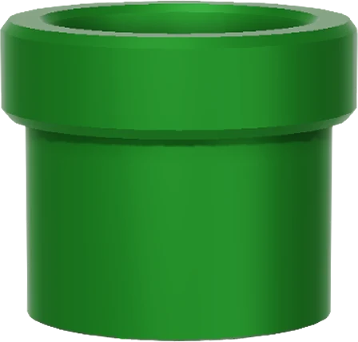

Piping Hot PHP
Larry Garfield
@Crell@phpc.social

- PHP-FIG Core Committee
- PHP Core Contributor
- General purpose pedant
- Thinking Functionally in PHP
- Available for hire!
Welcome to the first ever talk on PHP 8.6!
Let's talk about PHP 5.3
It's been a long road...
... getting from there to here
2009

PHP 5.3: So old it doesn't have its own logo
Closures
$c = 5;
$fn = function ($a, $b) use ($c) {
return ($a * $b) * $c;
};
print $fn(2, 3); // 25
Closures with references
$c = 5;
$fn = function ($a, $b) use (&$c) {
return ($a * $b) * $c;
};
$c = 2;
print $fn(2, 3); // 10
How closures really work
$c = 5;
class Closure_abc123 extends Closure {
public function __construct(private $c) {}
public function __invoke(int $a, int $b) {
$c = $this->c;
return ($a * $b) * $c;
}
}
$fn = new Closure_abc123($c);
print $fn(2, 3); // 25
DIY
$c = 5;
class Computation {
public function __construct(private $c) {}
public function __invoke(int $a, int $b) {
$c = $this->c;
return ($a * $b) * $c;
}
}
$fn = new Computation($c);
print $fn(2, 3); // 25
And then the world was silent for many a year...
2019
PHP 7.4: Doesn't have its own logo, but PHP 7 has one?
Old Closures
$c = 5;
$fn = function (int $a, int $b) use ($c): int {
return ($a * $b) * $c;
};
print $fn(2, 3); // 25
Short Closures
$c = 5;
$fn = fn (int $a, int $b): int => ($a * $b) * $c;
print $fn(2, 3); // 25
Short Closures
$arr = [1, 2, 3, 4, 5];
// Doing this with long-closures was just fugly.
$odds = array_filter($arr, fn(int $v): bool => (bool) $v % 2);
2021
PHP 8.1: Now with per-release logos!
A common pattern
function is_odd(int $v): bool {
return (bool) $v % 2;
}
$arr = [1, 2, 3, 4, 5];
$odds = array_filter($arr, fn(int $v): bool => is_odd($v));
First-class callables
function is_odd(int $v): bool {
return (bool) $v % 2;
}
$arr = [1, 2, 3, 4, 5];
$odds = array_filter($arr, is_odd(...));
Internally...
function is_odd(int $v): bool {
return (bool) $v % 2;
}
$arr = [1, 2, 3, 4, 5];
$fn = class() extends Closure {
public function __invoke(int $v): bool {
return is_odd($v);
}
}
$odds = array_filter($arr, $fn);
This was the consolation prize
We tried to get pipes and Parital Function Application,
but failed
Wait, tried to get what...?
2025
PHP 8.5: Now that we're all caught up...
Pipes

This is fugly, but common
$arr = ['A', 'B', 'C', 'D', 'E'];
$result = array_values(
array_filter(
is_odd(...),
array_map(
fn(string $x): bool => ord($x),
$arr
)
)
);
This is better, but still clumsy
$arr = ['A', 'B', 'C', 'D', 'E'];
$temp = array_map(fn(string $x): bool => ord($x), $arr));
$temp = array_filter(is_odd(...), $temp);
$temp = array_values($temp);
$result = $temp;
Much nicer
$arr = ['A', 'B', 'C', 'D', 'E'];
$result = $arr
|> (fn($x) => array_map(ord(...), $x))
|> (fn($x) => array_filter(is_odd(...), $x))
|> array_values(...)
;
|>
- Read as "pipe to" or "pass result to"
- Takes only single-param callables
- The more steps there are, the more it helps
Just like Unix pipes
$ ls -l | grep "page" | awk '{print $5 " " $3 " " $9}' | sort -nr | head -5
- Find all files in the current dir
- Filter to just those that have "page" in the name
- Grab just the size, owner, and filename
- Sort numerically, in descending order
- Trim to just the first 5
In PHP, step 1
$result = scandir('.', SCANDIR_SORT_NONE)
;
- Find all files in the current dir
In PHP, step 2
$result = scandir('.', SCANDIR_SORT_NONE)
|> (fn($f) => array_filter(fn($x) => str_contains($x, 'page')))
;
- Find all files in the current dir
- Filter to just those that have "page" in the name
In PHP, step 3
$result = scandir('.', SCANDIR_SORT_NONE)
|> (fn($v) => array_filter($v, fn($x) => str_contains($x, 'page')))
|> (fn($v) => array_map(fn($x) => new SplFileInfo($x))
;
- Find all files in the current dir
- Filter to just those that have "page" in the name
- Grab just the size, owner, and filename
In PHP, step 4
function sorted(array $a, \Closure $sorter): array {
usort($a, $sorter);
return $a;
}
function size_sort(SplFileInfo $a, SplFileInfo $b): int {
return $a->getSize() <=> $b->getSize();
}
$result = scandir('.', SCANDIR_SORT_NONE)
|> (fn($v) => array_filter($v, fn($x) => str_contains($x, 'page')))
|> (fn($v) => array_map(fn($x) => new SplFileInfo($x))
|> (fn($v) => sorted($v, size_sort(...)))
|> array_reverse(...)
;
- Find all files in the current dir
- Filter to just those that have "page" in the name
- Grab just the size, owner, and filename
- Sort numerically, in descending order
In PHP, step 5
function sorted(array $a, \Closure $sorter): array {
usort($a, $sorter);
return $a;
}
function size_sort(SplFileInfo $a, SplFileInfo $b): int {
return $a->getSize() <=> $b->getSize();
}
$result = scandir('.', SCANDIR_SORT_NONE)
|> (fn($v) => array_filter($v, fn($x) => str_contains($x, 'page')))
|> (fn($v) => array_map(fn($x) => new SplFileInfo($x))
|> (fn($v) => sorted($v, size_sort(...)))
|> array_reverse(...)
|> (fn($v) => array_chunk($v, 5)[0])
;
- Find all files in the current dir
- Filter to just those that have "page" in the name
- Grab just the size, owner, and filename
- Sort numerically, in descending order
- Trim to just the first 5
In PHP, step 6
function sorted(array $a, \Closure $sorter): array {
usort($a, $sorter);
return $a;
}
function size_sort(SplFileInfo $a, SplFileInfo $b): int {
return $a->getSize() <=> $b->getSize();
}
$result = scandir('.', SCANDIR_SORT_NONE)
|> (fn($v) => array_filter($v, fn($x) => str_contains($x, 'page')))
|> (fn($v) => array_map(fn($x) => new SplFileInfo($x))
|> (fn($v) => sorted($v, size_sort(...)))
|> array_reverse(...)
|> (fn($v) => array_chunk($v, 5)[0])
|> (fn($v) => array_map(fn(SplFileInfo $x) => sprintf('%d %s %s, $x->getSize(), $x->getOwner(), $x->getFilename()))
;
- Find all files in the current dir
- Filter to just those that have "page" in the name
- Grab just the size, owner, and filename
- Sort numerically, in descending order
- Trim to just the first 5
- Format the results for printing
Higher-order functions
Partial application with higher order functions
function sorted(\Closure $sorter): \Closure {
return function(array $a) use ($sorter) {
usort($a, $sorter);
return $a;
}
}
$result = scandir('.', SCANDIR_SORT_NONE)
|> (fn($v) => array_filter($v, fn($x) => str_contains($x, 'page')))
|> (fn($v) => array_map(fn($x) => new SplFileInfo($x))
|> sorted(size_sort(...))
|> array_reverse(...)
|> (fn($v) => array_chunk($v, 5)[0])
|> (fn($v) => array_map(fn(SplFileInfo $x) => sprintf('%d %s %s, $x->getSize(), $x->getOwner(), $x->getFilename()))
;
Partial application is easy
// ...
function take(int $count): \Closure {
return fn(array $v) => array_chunk($v, $count)[0];
}
$result = scandir('.', SCANDIR_SORT_NONE)
|> (fn($v) => array_filter($v, fn($x) => str_contains($x, 'page')))
|> (fn($v) => array_map(fn($x) => new SplFileInfo($x))
|> sorted(size_sort(...))
|> array_reverse(...)
|> take(5)
|> (fn($v) => array_map(fn(SplFileInfo $x) => sprintf('%d %s %s, $x->getSize(), $x->getOwner(), $x->getFilename()))
;
Higher order functions are so simple
// ...
function afilter(\Closure $filter): \Closure {
fn($v) => array_filter($v, $filter);
}
$result = scandir('.', SCANDIR_SORT_NONE)
|> afilter(fn($x) => str_contains($x, 'page'))
|> (fn($v) => array_map(fn($x) => new SplFileInfo($x))
|> sorted(size_sort(...))
|> array_reverse(...)
|> take(5)
|> (fn($v) => array_map(fn(SplFileInfo $x) => sprintf('%d %s %s, $x->getSize(), $x->getOwner(), $x->getFilename()))
;
You can quickly make a lot of them
// ...
function amap(\Closure $mapper): \Closure {
return fn(array $v) => array_map($mapper, $v);
}
$result = scandir('.', SCANDIR_SORT_NONE)
|> afilter(fn($x) => str_contains($x, 'page'))
|> amap(fn($x) => new SplFileInfo($x))
|> sorted(size_sort(...))
|> array_reverse(...)
|> take(5)
|> amap(fn(SplFileInfo $x) => sprintf('%d %s %s, $x->getSize(), $x->getOwner(), $x->getFilename())
;
Or just utility functions/methods
// ...
function format_file(\SplFileInfo $f): string {
return sprintf('%d %s %s, $x->getSize(), $x->getOwner(), $x->getFilename());
}
$result = scandir('.', SCANDIR_SORT_NONE)
|> afilter(fn($x) => str_contains($x, 'page'))
|> amap(fn($x) => new SplFileInfo($x))
|> sorted(size_sort(...))
|> array_reverse(...)
|> take(5)
|> amap(format_file(...))
;
Self-describing code with pipes
// General purpose tools
function sorted(\Closure $sorter): \Closure {}
function take(int $count): \Closure {}
function afilter(\Closure $filter): \Closure {}
function amap(\Closure $mapper): \Closure {}
// Task specific
function size_sort(SplFileInfo $a, SplFileInfo $b): int { }
function format_file(\SplFileInfo $f): string {}
$result = scandir('.', SCANDIR_SORT_NONE)
|> afilter(fn($x) => str_contains($x, 'page'))
|> amap(fn($x) => new SplFileInfo($x))
|> sorted(size_sort(...))
|> array_reverse(...)
|> take(5)
|> amap(format_file(...))
;
See Crell/fp
2026
PHP 8.6: So new it doesn't even have a logo yet
Partial Function Application
(AKA, yet another way to make closures)
This is annoyingly common
$hasPage = fn($x) => str_contains($x, 'page');
//
Pave the cowpaths
$hasPage = fn($x) => str_contains($x, 'page');
$hasPage = str_contains(?, 'page');
Anatomy of PFA
function f(int $a, float $b, Point $c, string $d, int $e, int $opt = 0): string {}
f(?, 3.14, ?, 'narf', e: ?, ...)
⇓
function (int $a, Point $c, int $e, int $opt = 0): string {
return f($a, 3.14, $c, 'narf', $e, $opt);
};
?: Copy this parameter...: Copy "the rest of the parameters"- A value: Use this parameter
Advanced PFA
function f(int $a, float $b, Point $c, string $d, int $e, int $opt = 0): string {}
f(b: ?, a: ?, d: 'narf', opt: ?, ...)
⇓
function (float $b, int $a, int $opt, Point $c, int $e): string {
return f($a, $b, $c, 'narf', $e, $opt);
};
- Named args let you rearrange parameters!
- Explicit placeholders are never optional
A Thunk
function f(int $a, float $b, Point $c, string $d, int $e, int $opt = 0): string {}
f(1, 3.14, new Point(1, 2), 'narf', 5, 6, ...)
⇓
function (): string {
return f(1, 3.14, new Point(1, 2), 'narf', 5, 6);
};
- Closure that takes no args but does something: "Thunk"
- Delay execution of a function until it's actually needed.
Real-world uses
// Provide all but one argument
$c = array_map(strtoupper(...), ?);
$c = array_filter(?, is_numeric(...));
// Provide one or two values to start with, and "the rest".
$c = stuff(1, 'two', ...);
// Fill in a few parameters by name, and leave the rest as is.
$c = stuff(f: 3.14, s: 'two', ...);
// Just reference a function/method, aka first-class-callables.
$c = stuff(...);
// Thunks
$id = 'someId';
$value = getSetting($id, default: getDefaultFromDb($id, ...));
// getSetting() calls $default() only if necessary.
Applying partial application
$result = scandir('.', SCANDIR_SORT_NONE)
|> afilter(fn($x) => str_contains($x, 'page'))
|> amap(fn($x) => new SplFileInfo($x))
|> sorted(size_sort(...))
|> array_reverse(...)
|> take(5)
|> amap(format_file(...))
;
Applying partial application
$result = scandir('.', SCANDIR_SORT_NONE)
|> afilter(str_contains(?, 'page'))
|> amap(fn($x) => new SplFileInfo($x))
|> sorted(size_sort(...))
|> array_reverse(...)
|> take(5)
|> amap(format_file(...))
;
If you prefer not having utilities
$result = scandir('.', SCANDIR_SORT_NONE)
|> array_filter(?, str_contains(?, 'page'))
|> array_map((fn($x) => new SplFileInfo($x), ?)
|> sorted(?, size_sort(...))
|> array_reverse(...)
|> take(5)
|> array_map(format_file(...), ?)
;
But... why?
Enables "point-free" style
Tacit programming, also called point-free style, is a programming paradigm in which function definitions do not identify the arguments (or "points") on which they operate.
"Skipping needless temp variables"
From Crell/Serde
enum Cases {
private tokenize(string $input): array {
return preg_split('/(^[^A-Z]+|[A-Z][^A-Z]+)/', $input, -1, PREG_SPLIT_NO_EMPTY|PREG_SPLIT_DELIM_CAPTURE);
}
private function splitString(string $input): array {
return $this->tokenize(input)
|> amap(replace('_', ' '))
|> amap(explode(' '))
|> flatten(...)
|> amap(trim(...))
|> afilter()
}
}
From Crell/Serde
enum Cases {
// ...
public function convert(string $name): string {
return match ($this) {
self::Unchanged => $name,
self::lowercase => strtolower($name),
self::snake_case => $name,
|> $this->splitString(...)
|> implode('_')
|> strtolower(...)
,
self::kebab_case => $name,
|> $this->splitString(...)
|> implode('-')
|> strtolower(...)
,
self::CamelCase => $name,
|> $this->splitString(...)
|> amap(ucfirst(...))
|> implode('')
,
};
}
}
From Crell/MiDy
class PageData {
private array $files = [
new File(tags: ['a', 'b', 'c']),
new File(tags: ['c', 'd', 'e']),
new File(tags: ['x', 'y', 'a']),
];
public array $tags {
get => $this->arr
|> array_column(?, 'tags') // Gets an array of arrays
|> flatten(...) // Flatten that array
|> array_unique(...) // Remove duplicates
|> array_values(...) // Reindex the array.
}
// ...
}
Compare with
array_values(array_unique(array_merge(...array_column($arr, 'tags'))));
Blech
Inspiration for a streams API?
function decode_rot13($fp): \Generator {
while ($c = fgetc($fp)) yield str_rot13($c);
}
// Takes an iterable of strings and returns a line-buffering version of it.
function lines_from_charstream(iterable $it): \Closure {
$buffer = '';
return static function () use ($it, &$buffer) {
foreach ($it as $c) {
$buffer .= $c;
while (($pos = strpos($buffer, PHP_EOL)) !== false) {
yield substr($buffer, 0, $pos);
$buffer = substr($buffer, $pos);
}
}
};
}
$result = fopen('pipes.csv', 'rb') // No variable, so closes automatically at GC
|> decode_rot13(...)
|> lines_from_charstream(...)
|> map(str_getcsv(...))
|> map(Product::create(...))
|> map($repo->save(...))
;
Could we go further...?
Limits of Pipes
Inline adapter
function getUserEntity(int $id): UserEntity { }
function serializeUserDto(UserDto $user): string { }
// Type error fail!
print $id |> getUserEntity(...) |> serializeUserDto(...);
Don't send internal entities on the wire
Inline adapter
function getUserEntity(int $id): UserEntity { }
function serializeUserDto(UserDto $user): string { }
function userEntityToDto(UserEntity $user): UserDto { }
// Type match win!
print $id |> getUserEntity(...) |> userEntityToDto(...) |> serializeUserDto(...);
Nice that the function names are so self-documenting...
But what about nulls/errors?
function getUserEntity(int $id): ?UserEntity { }
function serializeUserDto(UserDto $user): string { }
function userEntityToDto(UserEntity $user): ?UserDto { }
// Type match fail (maybe).
print $id |> getUserEntity(...) |> userEntityToDto(...) |> serializeUserDto(...);
Now what...?
Bad/ugly answer
function getUserEntity(int $id): ?UserEntity { }
function serializeUserDto(UserDto $user): string { }
function userEntityToDto(UserEntity $user): ?UserDto { }
$user = getUserEntity($id);
if ($user !== null) { // Maybe there's a user?
$dto = userEntityToDto($user);
if ($dto !== null) { // Maybe there's a dto?
print serializeUserDto($dto);
}
}
- Deep nesting
- Repetitive
- All those temp vars
- ... So let's factor out the common bits
Build a "lift" function
function getUserEntity(int $id): ?UserEntity { }
function serializeUserDto(UserDto $user): string { }
function userEntityToDto(UserEntity $user): ?UserDto { }
function maybe(\Closure $fn): \Closure {
return fn($val) => $val === null ? null : $fn($val);
}
$user = getUserEntity($id);
if ($user !== null) { // Maybe there's a user?
$dto = userEntityToDto($user);
if ($dto !== null) { // Maybe there's a dto?
print serializeUserDto($dto);
}
}
"Lifts" a function from accepting TYPE to ?TYPE
"Lift" your functions
function getUserEntity(int $id): ?UserEntity { }
function serializeUserDto(UserDto $user): string { }
function userEntityToDto(UserEntity $user): ?UserDto { }
function maybe(\Closure $fn): \Closure {
return static fn($val) => $val === null ? null : $fn($val);
}
print $id
|> getUserEntity(...)
|> maybe(userEntityToDto(...))
|> maybe(serializeUserDto(...))
?? '';
|> binds higher than ??
But what if we want more details than just null?
Validate a username
- Only care about lower-case form
- Not already in use
- Start with a letter
- Be at least three characters long
- Not contain non-alphanumeric characters
- ...And we care which one failed
Setting up
enum ValidationError {
case StringTooShort;
case UsernameExists;
case InvalidCharacters;
case DoesNotStartWithLetter;
}
function lengthCheck(string $s, int $len): string|ValidationError {
return strlen($s) >= $len ? $s : ValidationError::StringTooShort;
}
function existsCheck(string $s): string|ValidationError {
// Use real code here, obviously...
return in_array($s, [...]) ? ValidationError::UsernameExists : $s;
}
function characterCheck(string $regex, string $s): string|ValidationError {
return preg_match($regex, $s) ? $s : ValidationError::InvalidCharacters;
}
function startsWithLetter(string $s): string|ValidationError {
return ctype_alpha($s[0]) ? $s : ValidationError::DoesNotStartWithLetter;
}
Naive usage
function lengthCheck(string $s, int $len): string|ValidationError {}
function existsCheck(string $s): string|ValidationError {}
function characterCheck(string $regex, string $s): string|ValidationError {}
function startsWithLetter(string $s): string|ValidationError {}
$result = 'ABC123'
|> strtolower(...)
|> lengthCheck(? , 3)
|> existsCheck(...)
|> characterCheck('/^[a-zA-Z0-9]*$/', ?)
|> startsWithLetter(...)
;
Works great on the happy path; type errors on unhappy path
New tools
function either(\Closure $fn): \Closure
{
return static fn(mixed $val) => $val instanceof Err ? $val : $fn($val);
}
$result = 'ABC123'
|> strtolower(...)
|> either(lengthCheck(? , 3))
|> either(existsCheck(...))
|> either(characterCheck('/^[a-zA-Z0-9]*$/', ?)))
|> either(startsWithLetter(...))
;
Works fine on all paths
Handling the result
function either(\Closure $fn): \Closure
{
return static fn(mixed $val) => $val instanceof Err ? $val : $fn($val);
}
$result = 'ABC123'
|> strtolower(...)
|> either(lengthCheck(? , 3))
|> either(existsCheck(...))
|> either(characterCheck('/^[a-zA-Z0-9]*$/', ?)))
|> either(startsWithLetter(...))
;
match ($result) {
ValidationError::StringTooShort => output('String must be 3 chars'),
ValidationError::UsernameExists => output('That username already exists'),
ValidationError::InvalidCharacters => output('Only alphanumeric chars are allowed'),
ValidationError::DoesNotStartWithLetter => output('Name must start with a letter'),
default => saveToDb($result),
};
Or whatever type-aware handling you want
Benefits
$result = 'ABC123'
|> strtolower(...)
|> either(lengthCheck(? , 3))
|> either(existsCheck(...))
|> either(characterCheck('/^[a-zA-Z0-9]*$/', ?)))
|> either(startsWithLetter(...))
;
- Trivial to add/remove steps
- Lots of tiny little functions
- => Super easy to test!
- Easy to read and self-documenting
But what if I want to collect all errors, not just one?
Logging the result
class ValidationLog {
public bool $valid { get => $this->errors === []; }
public function __construct(
readonly public string $string,
readonly public array $errors = []
) {}
}
function logError(\Closure $fn): \Closure {
return static function (mixed $val) use ($fn) {
if (! $val instanceof ValidationLog) {
$val = new ValidationLog($val);
}
$result = $fn($val->string);
if ($result instanceof ValidationError) {
return new ValidationLog($val->string, [...$val->errors, $result]);
}
return $val;
};
}
Update the pipe
function logError(\Closure $fn): \Closure {
return static function (mixed $val) use ($fn) {
if (! $val instanceof ValidationLog) {
$val = new ValidationLog($val);
}
$result = $fn($val->string);
if ($result instanceof ValidationError) {
return new ValidationLog($val->string, [...$val->errors, $result]);
}
return $val;
};
}
$result = 'ABC123'
|> strtolower(...)
|> logError(lengthCheck(? , 3))
|> logError(existsCheck(...))
|> logError(characterCheck('/^[a-zA-Z0-9]*$/', ?)))
|> logError(startsWithLetter(...))
;
if (! $result->valid) {
output($result->errors);
return;
}
// ...
Common pattern
- Concatenating functions
- With extra "context", which could be logic
- Functions are from
AtoA-and-stuff
What shall we call this pattern?